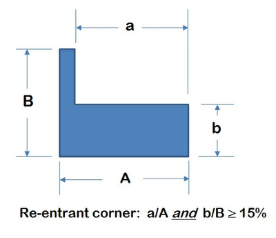
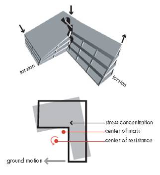
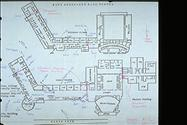
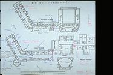

Esquinas entrantes [REC]
Un edificio con forma (en planta) en L-, U-, E- u otra en donde dos alas pueden oscilar fuera de fase, conduciendo a grandes esfuerzos cortantes en los diafragmas de piso y/o techo.
Si el retroceso en planta es menor que el 15% de ambas dimensiones en planta, los retrocesos son considerados como esquinas entrantes

Ejemplos de formas de edificios con esquinas entrantes.(A. Charleson, Seismic Design for Architects, Architectural Press 2008, p133 fig. 8.10)

Este diafragma ilustra el principio por el cual un retroceso menor al 15% de las direcciones en ambos sentidos es considerado como una esquina entrante.

Movimiento de las alas de un edificio en forma de L durante un terremoto resulta en altos esfuerzos a cortante combinados con concentraciones de esfuerzos en las esquinas entrantes; esto se agrava con efectos a torsión los cuales se desarrollan ya que el centro de masa y rigidez no coinciden para estas formas. (FEMA 454)
 

El colegio West Anchorage sufrío daños extensivos en el terremoto de Alaska 1964. La concentración de esfuerzos en la esquina entrante causaron daños en el diafragma de concreto del techo del edificio de concreto reforzado. La foto de la izquierda muestra el edificio dañado y la forma en planta es mostrada en la derecha (Courtesy of the NISEE, University of California, Berkeley)

Edificio con forma de L con esquinas entrantes, India (S. Brzev)